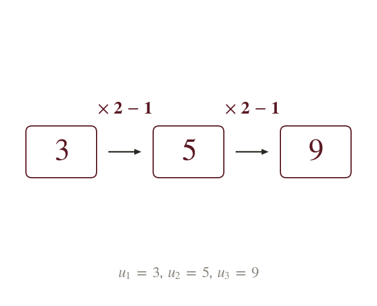
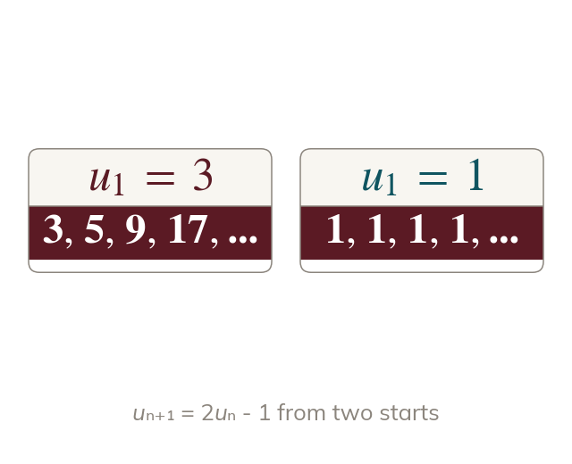
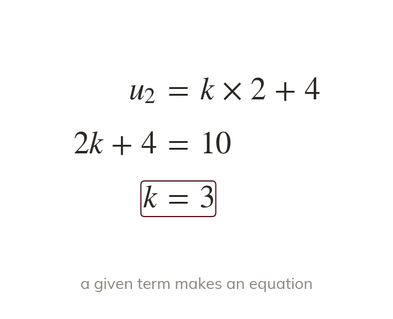
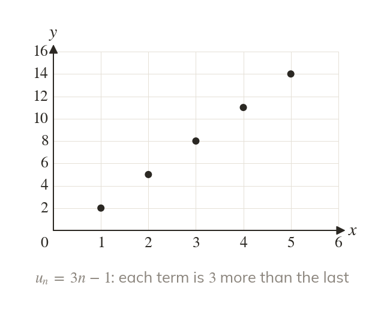
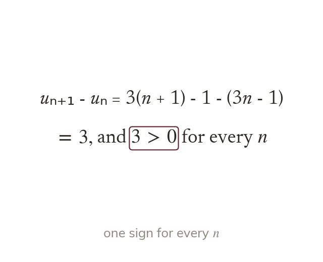
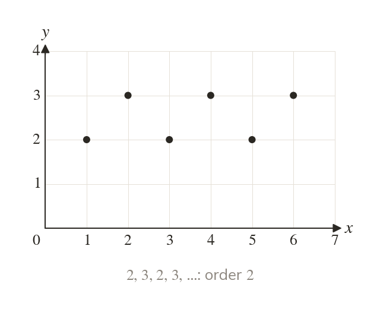

Each term from the last
with says double the term you have, then take
So , and
A recurrence relation builds a sequence one term from the one before, the way a spreadsheet or a yearly model works. Deciding whether a sequence increases, decreases or repeats sets up the modelling in
Work down the page at your own pace. Write every answer in your book first, then click to check it.
Read each card, then follow the worked examples one step at a time.

with says double the term you have, then take
So , and

The same rule from a different first term gives a different sequence. A recurrence relation needs both.

If and then
Given the equation gives
Pick an answer. If it's wrong, the feedback tells you which mistake it was.
Write the blanks in your book first, then tap each one to check.
Read each card, then follow the worked examples one step at a time.

A sequence is increasing if for every n, and decreasing if for every n. A few terms are not enough to show it.

For the difference is
That is positive for every so the sequence is increasing.

A periodic sequence repeats its terms, and its order is how many terms it takes to repeat. with gives ..., with order
Pick an answer. If it's wrong, the feedback tells you which mistake it was.
Write the blanks in your book first, then tap each one to check.
Finished? Next lesson: P2-3.8 Modelling with Series.
For each skill, tap the one that is true for you today. Your Revise pages start with anything you mark Not yet.
Your ratings are saved on this device only.
Log in, then search for a code to practise that skill.